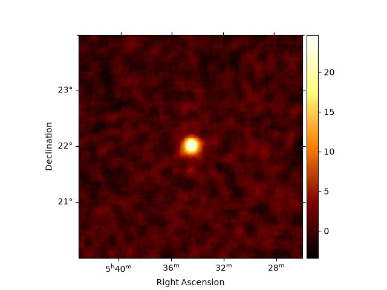

Note
Go to the end to download the full example code or to run this example in your browser via Binder.
Data analysis using background estimated from dedicated OFF runs#
Perform an analysis using paired empty off runs.
Estimate the background for observations using paired, empty-field OFF runs, and the use it for computing - a significance map - a 1D spectral fit.
Context#
Standard IACT background methods try to estimate the background from source-free
regions in room same field of view as the source,
e.g.: ReflectedRegionsBackgroundMaker.
However, sometimes one might need dedicated ON/OFF observations,
where the source sits at the centre of the ON run and a separate, empty-field
OFF run is taken to measure the background. This is the classical Whipple-style
ON/OFF setup, and it is used when the source fills the field of view or when
no reliable background model exists.
This case can be handled with OnOffBackgroundMaker. It takes a
reduced ON dataset and a paired OFF observation, mirrors the OFF run’s events
into the ON pointing frame to build counts_off, and sets the acceptances
from the livetimes so that alpha = t_on / t_off. The resulting
MapDatasetOnOff or SpectrumDatasetOnOff
uses WStat, which treats the OFF counts as a Poisson measurement.
Proposed approach#
Loads Crab ON runs and empty-field OFF runs from the H.E.S.S. DL3 DR1,
Pairs them and checks each pairing with
check_run_pair_validity,Reduces the ON runs (counts and IRFs) and adds the OFF background,
Computes 2D significance map
Computed a 1D spectrum
Prerequisites#
If you are not familiar with general data reduction and analysis chains, please check the Low level API or Spectral analysis tutorials.
Setup#
import numpy as np
import astropy.units as u
import matplotlib.pyplot as plt
from astropy.coordinates import SkyCoord
from regions import CircleSkyRegion
from gammapy.data import DataStore
from gammapy.datasets import Datasets, MapDataset
from gammapy.makers import (
MapDatasetMaker,
SafeMaskMaker,
OnOffBackgroundMaker,
)
from gammapy.makers.utils import check_run_pair_validity
from gammapy.maps import MapAxis, WcsGeom
from gammapy.estimators import ExcessMapEstimator
from gammapy.modeling import Fit
from gammapy.modeling.models import (
SkyModel,
PowerLawSpectralModel,
)
Load and pair the observations#
We use Crab observations as the ON runs and empty-field observations from the H.E.S.S public data release as the OFF runs. Note that unlike a dedicated ON/OFF campaign where the OFF runs are taken specifically to measure the background under matched conditions, these are taken just for demonstration purpose with only zenith angle matching and are not ideally suited. Thus, the final results may have issues.
datastore = DataStore.from_dir("$GAMMAPY_DATA/hess-dl3-dr1/")
on_ids = [23523, 23526, 23559, 23592] # Crab (ON)
off_ids = [23736, 21851, 22022, 26827] # empty-field runs (OFF)
on_observations = datastore.get_observations(on_ids)
off_observations = datastore.get_observations(off_ids)
Note that the ON/OFF pairing is user responsibility – the maker does not match runs.
Here we pair positionally (on_observations[i] with off_observations[i]); in a
real analysis you would pair by matched zenith/azimuth and observing
conditions.
Check the pairing#
Gammapy provides a convenience function to check the validity of the pairing. You may decide to reject some pairs based on this information.
energy_axis_true = MapAxis.from_energy_bounds(
"0.5 TeV", "20 TeV", nbin=20, name="energy_true"
)
validity = check_run_pair_validity(
on_observations,
off_observations,
energy_axis_true,
)
print(validity)
obs_id off_obs_id zenith_on ... aeff_max_frac_deviation aeff_ok
deg ...
------ ---------- ------------------ ... ----------------------- -------
23523 23736 48.049192941772915 ... 0.9864009977333521 False
23526 21851 46.20774130523715 ... 0.34751398149859525 False
23559 22022 45.39769677833194 ... 0.12067998353910431 False
23592 26827 47.76928757690837 ... 0.47892591251997546 False
Data reduction#
Now we come to the main part of the data reduction where we will
run the OnOffBackgroundMaker along with our regular makers
As usual, we will need to define our analysis geometry.
We will do the data analysis on a 3D geometry now. If you have point-like IRFs,
you should use a 1D geometry, and perform only spectral extraction, as in,
e.g.: MAGIC with Gammapy or VERITAS with Gammapy.
energy_axis = MapAxis.from_energy_bounds("0.1 TeV", "10 TeV", nbin=10, name="energy")
geom = WcsGeom.create(
skydir=(83.633, 22.014), # Crab position
binsz=0.02,
width=(4, 4),
frame="icrs",
proj="CAR",
axes=[energy_axis],
)
dataset_empty = MapDataset.create(
geom=geom, energy_axis_true=energy_axis_true, name="empty"
)
offset_max = 2.5 * u.deg
maker = MapDatasetMaker(selection=["counts", "exposure", "edisp", "psf"])
safe_mask_maker = SafeMaskMaker(methods=["offset-max"], offset_max=offset_max)
bkg_maker = OnOffBackgroundMaker(acceptance_method="livetime_ratio")
Note that here we are simply using the ratio of the livetimes for acceptance
computation. You may also use the total counts outside an exclusion_mask
using the option counts_ratio.
datasets = Datasets()
for on_obs, off_obs in zip(on_observations, off_observations):
cutout = dataset_empty.cutout(
on_obs.get_pointing_icrs(on_obs.tmid),
width=2 * offset_max,
name=f"obs-{on_obs.obs_id}",
)
dataset = maker.run(cutout, on_obs)
dataset = safe_mask_maker.run(dataset, on_obs)
dataset_on_off = bkg_maker.run(dataset, on_obs, off_obs)
datasets.append(dataset_on_off)
print(datasets)
Datasets
--------
Dataset 0:
Type : MapDatasetOnOff
Name : obs-23523
Instrument : HESS
Models :
Dataset 1:
Type : MapDatasetOnOff
Name : obs-23526
Instrument : HESS
Models :
Dataset 2:
Type : MapDatasetOnOff
Name : obs-23559
Instrument : HESS
Models :
Dataset 3:
Type : MapDatasetOnOff
Name : obs-23592
Instrument : HESS
Models :
While a full 3D analysis is technically feasible, it can introduce a lot of systematics. For now, we will extract a significance map and a spectrum separately.
Significance maps#
A quick-look check that the background estimate is sensible. The Crab is clearly seen at center:
stacked = datasets.stack_reduce(name="stacked")
estimator = ExcessMapEstimator(
correlation_radius="0.1 deg",
energy_edges=[0.5, 10] * u.TeV,
selection_optional=[],
)
maps = estimator.run(stacked)
plt.figure()
maps["sqrt_ts"].plot(add_cbar=True)
plt.show()

/home/runner/work/gammapy-docs/gammapy-docs/gammapy/.tox/build_docs/lib/python3.12/site-packages/gammapy/maps/core.py:1918: RuntimeWarning: invalid value encountered in divide
out.data = operator(out.data, other_data)
1D Spectral fit#
We extract a spectrum from a circular region around our source position
on_region = CircleSkyRegion(
SkyCoord(83.61, 22.02, unit="deg", frame="icrs"), radius=0.22 * u.deg
)
spectrum_dataset = stacked.to_spectrum_dataset(on_region)
spectral_model = PowerLawSpectralModel(
index=2.6,
amplitude="4.8e-11 cm-2 s-1 TeV-1",
reference="1 TeV",
)
spectrum_dataset.models = SkyModel(spectral_model, name="crab")
fit = Fit()
result = fit.run([spectrum_dataset])
print(result)
print(result.models.to_parameters_table())
/home/runner/work/gammapy-docs/gammapy-docs/gammapy/.tox/build_docs/lib/python3.12/site-packages/gammapy/maps/core.py:1918: RuntimeWarning: invalid value encountered in divide
out.data = operator(out.data, other_data)
OptimizeResult
backend : minuit
method : migrad
success : True
message : Optimization terminated successfully.
nfev : 37
total stat : 66.52
CovarianceResult
backend : minuit
method : hesse
success : True
message : Hesse terminated successfully.
model type name value unit ... min max frozen link prior
----- ---- --------- ---------- -------------- ... --- --- ------ ---- -----
crab index 2.7675e+00 ... nan nan False
crab amplitude 4.7216e-11 TeV-1 s-1 cm-2 ... nan nan False
crab reference 1.0000e+00 TeV ... nan nan True
You can compare this with the standard Crab spectrum, compute flux point, etc.
Try this on other sources in the H.E.S.S. data release and compare with the results from the FoV background.